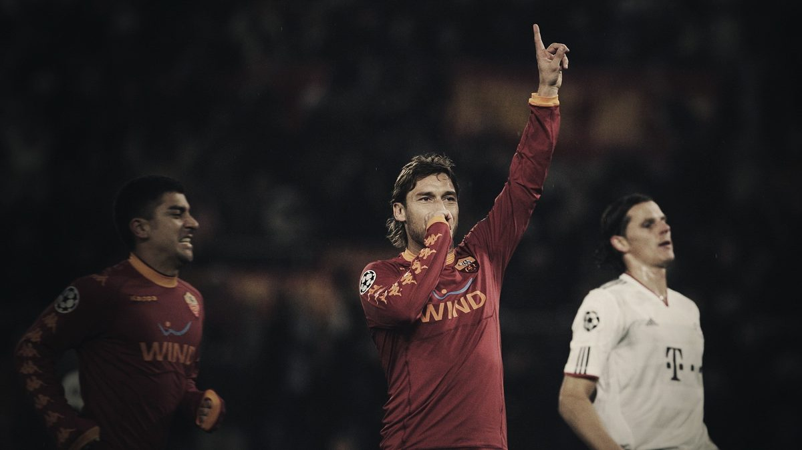
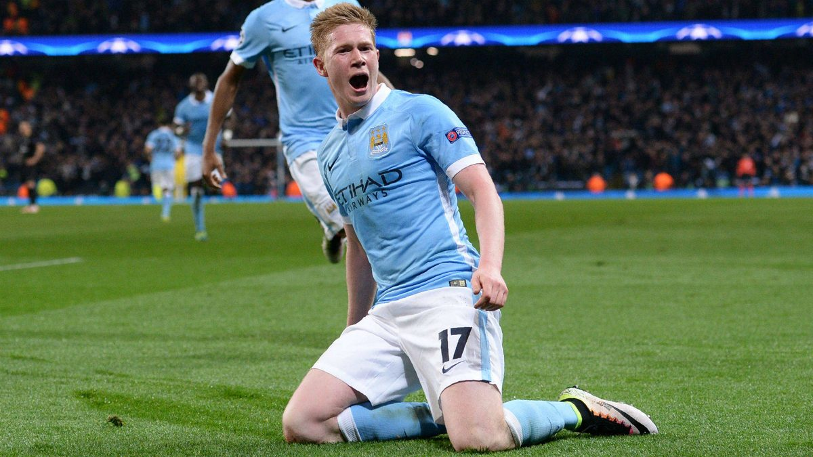

The Last Number 10: Football's Artistic Position Is Vanishing
In Rome, 2006, Francesco Totti an Italian legend drops into the space between two Sampdoria midfielders, the space that doesn't exist in modern coaching. Totti doesn't have to run to find it, he doesn't need to. The ball arrives at his feet, and he shields it with his body as if it all depended on this play. Totti glances up once, without thinking twice he slides a pass through a gap only he seemed to have noticed. He has no urgency, he is the only one out of anyone on the pitch who knows the perfect play at the right moment. It's the pass that any number 10 would dream of in their sleep, the assist. The moment no longer accomplished in modern football.

The Classic number 10
El enganche, the fantasista was at some point the heart of the best teams in the world. Positioned behind the striker, the ball went through their feet every time. This was Diego Maradona in Napoli, Platini in Juventus, Zidane in the World Cup 1998, Riquelme who felt untouchable at Boca Juniors, Dennis Bergkamp with his single touches that destroyed the defense of opponents. These are legends that played with elegance, that's the word that describes the classic #10: elegance. Not known for their defensive capabilities or high work rate, they were trusted with every match to create magic that nobody else could produce. For decades, the number on the back meant something more than just one out of 11 players on the pitch. It meant this is our star, he will win us the game.
— Tim Vickery, BBC Sport's South American football correspondent
The Structure
Football in the 80's and 90's was loosely structured based on current standards. Formations like 4-4-2 or 3-5-2 left an open space between the midfield and defenders. This space is called "the hole" by analysts which is now labeled zone 14. A classic number 10 was positioned there, protected by their teammates who did the running that they didn't have to. That space now doesn't exist as modern defensive lines are now compact vertically and horizontally, with two midfielders often acting as double pivots tasked with defending the space that number 10s occupied. There no longer is an empty space.
Then pressing which is necessary for modern football completely killed the number 10 position. Systems such as Pep Guardiola's Man City or Mikel Arteta's Arsenal work on coordinated pressure. Time on the ball for a 10 became a luxury. A player in the 90's could have 2 to 3 seconds to receive a pass, take a touch, and pick a pass to break lines. A playmaker today is lucky to not have a player already on them let alone have 2 to 3 seconds to decide. The shift may sound small but it makes the biggest difference when deciding and doing the play. All of the plays of a number 10 depend on time, the touch, the vision, and the pass.
— Jürgen Klopp, to Sky Sports
Another thing that changed is that players that can play like a number 10 can't due to the work rate. Modern football asks these players to defend, to pressure. This is why players today like Jude Bellingham, Martin Odegaard or Kevin De Bruyne at Man City they made plays but they have to also take a defensive role. A player who won't track back or press becomes a liability for the team when the ball is on the opponent's possession. A manager can't simply have 2 players not pressuring as often the striker doesn't pressure. The match would become a 9 vs 11 when the opponent has the ball. Not defending can't be justified.
The skills have not been lost
The creativity itself has not been lost. It just that it has been distributed to other skills or not shown in players often. The passing ability and control was moved to deep-lying midfield playmakers who move the ball from the midfield not behind the striker. Andrea Pirlo and Xabi Alonso did the job of a number 10, 18 meters further back. Toni Kroos and Luka Modric did the same at the Real Madrid. Kroos controlled the ball deep while Modric carried the ball to the final third.
Some of the number 10 talent moved to the wing. Inverted wingers cutting in to provide the creation number 10's used. Now the fullbacks also support adding width to the old number 10. Now there are also hybrid players such as Kevin De Bruyne and Bruno Fernandes who are frequently known as the modern number 10 or Jude Bellingham who is the new Zidane for his elegance. These players cover the area in the box. press up, track back, and still have the ability to create chances. These players do in 90 minutes offensively is what Riquelme or Rui Costa could have done in 20, but the job is more demanding now, it's different.

The number now also doesn't have the same meaning. Lionel Messi wore the #10 for Barcelona and Argentina, but he was not a classic number 10 he played as an inverted winger or even a false 9, not a traditional playmaker with freedom. Kylian Mbappe and Neymar are also players who have worn the number 10 while not playing at all like a number 10. In modern football it describes the best player and sometimes not even that, it doesn't have a meaning positionally.
The next number 10
There are always new academy players that are projected to be the next best player that plays between the lines. This may mean the comeback of the classic 10 position. It rarely lasts until they become 1st team players and are often converted into new modern position. Coaching now shows further importance to defending. This causes for even at the academy level for a player to not be able to make a game opening play as defenders and midfielders are harder to break and open spaces.
The position will never be forgotten due to the legends that played on it. The skills of the classic 10 will continue to be developed even if the classic 10 doesn't come back. Football has traded individual skills for collective efficiency. Football has gained speed and structure. While many continue to miss players similar to Zidane and Platini there is serious talent that has developed and will continue to develop to continue to shape history in the world of Football.